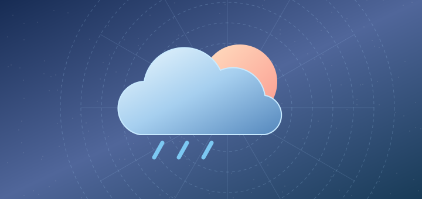
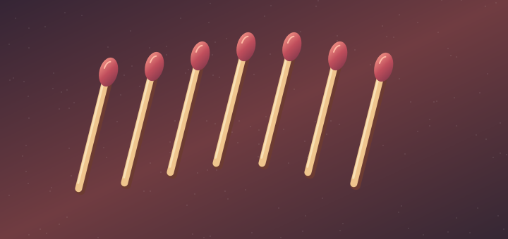
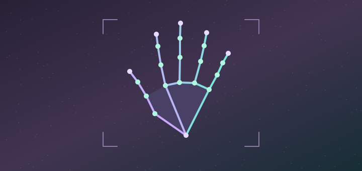

Our mission
Build approachable digital tools that anyone can open, try and understand.
We’re a team of aspiring IT professionals turning ideas into interactive applications, original designs and intelligent web experiences.
Scroll to exploreTHE ERROR SQUAD is our shared BSIT portfolio. Each project pairs a technical question with an interface you can try for yourself.
Build approachable digital tools that anyone can open, try and understand.
Grow into a team that can take an idea from a sketch to a working application.
 Creative Design01
Creative Design01
An edition of geometric prints exploring repetition, scale and negative space.
 Web Applications02
Web Applications02
A precision keypad with keyboard shortcuts and a running calculation history.

Web Applications03Search a city for its current conditions and a multi-day weather outlook.

Games04Take one or two sticks. Outsmart a computer opponent and claim the last move.
 Web Applications05
Web Applications05
Exchange messages across local tabs or connect a shared studio room.
 Artificial Intelligence06
Artificial Intelligence06
Drop in a photograph and explore the labels predicted by MobileNet.
 Artificial Intelligence07
Artificial Intelligence07
Measure the positive and negative language in an English review.

Artificial Intelligence08Recognize hand poses and map landmarks using your device camera.
Eight members, one squad. Select a card or View profile to read each member’s full profile.
BSIT Student · Second Year
NEMSU – Cagwait Campus
I am a second-year Information Technology student who is interested in learning more about computers, technology, and programming. I enjoy discovering new innovations and developing my knowledge in coding, software development, website creation, and computer systems.
BSIT Student · Second Year
NEMSU – Cagwait Campus
I am a second-year IT student who is simple, hardworking, and willing to learn. I chose this course because I want to know more about computers and technology.
BSIT Student
Cagwait, Surigao Del Sur
I am currently pursuing a Bachelor of Science in Information Technology (BSIT). As an IT student, I am interested in understanding how technology works and how it can be used to create useful and meaningful solutions. I enjoy exploring computer applications, learning programming, designing systems, and developing my skills through different academic activities and projects.
BSIT Student · Second Year
NEMSU – Cagwait Campus
I am Rose Ann Picasales, a second-year Bachelor of Science in Information Technology student at North Eastern Mindanao State University (NEMSU) – Cagwait Campus.
BSIT Student
Information Technology
I am an Information Technology student who is passionate about learning technology, programming, and creating useful digital solutions. I enjoy exploring new technologies and improving my skills in coding, software development, web design, and computer systems.
BSIT Student
Cagwait, Surigao del Sur
Hi! I'm Jude Labao, a 21-year-old Bachelor of Science in Information Technology (BSIT) student. I am eager to learn, explore, and develop my knowledge and skills in technology.
BSIT Student · Second Year
NEMSU – Cagwait Campus
I am a second-year college student taking Bachelor of Science in Information Technology. I am a motivated and dedicated student who enjoys learning about computers, technology, and how they make people's lives easier. I am eager to explore different areas of IT, such as programming, computer systems, networking, and software development.
BSIT Student · Second Year
NEMSU – Cagwait Campus
I am a second-year Bachelor of Science in Information Technology student at North Eastern Mindanao State University – Cagwait Campus. I am a hardworking, responsible, and determined person who is always willing to learn new things. I am interested in technology, computers, and discovering how technology makes our lives easier. I believe that every challenge is an opportunity to learn, improve, and grow as a person.
Have a question, feedback or an idea to build together? Send the group a note.
Prepare an email for the group. Add the recipient in your email app.